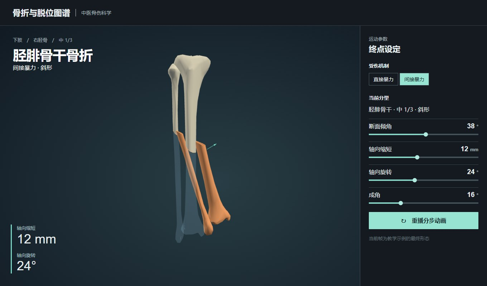
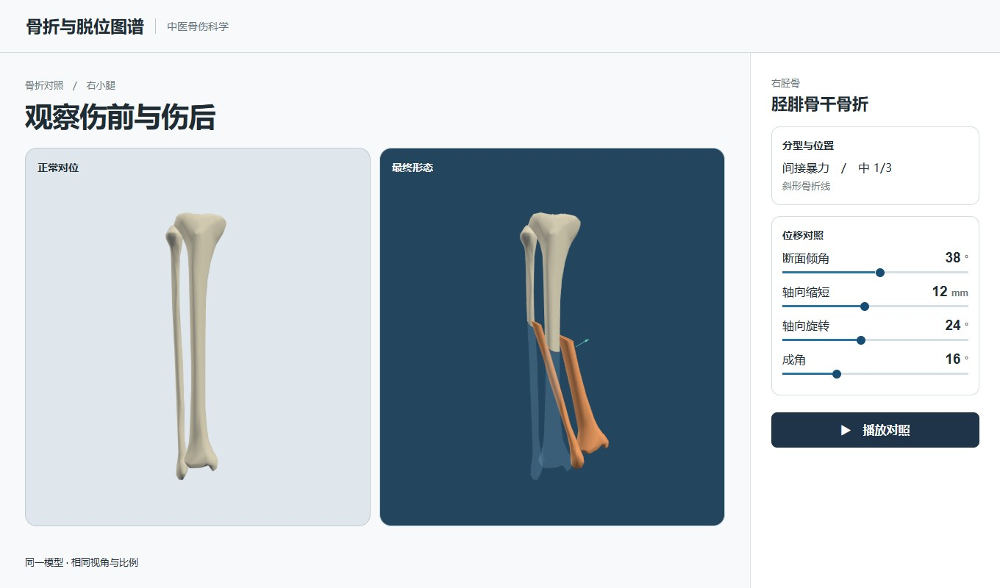
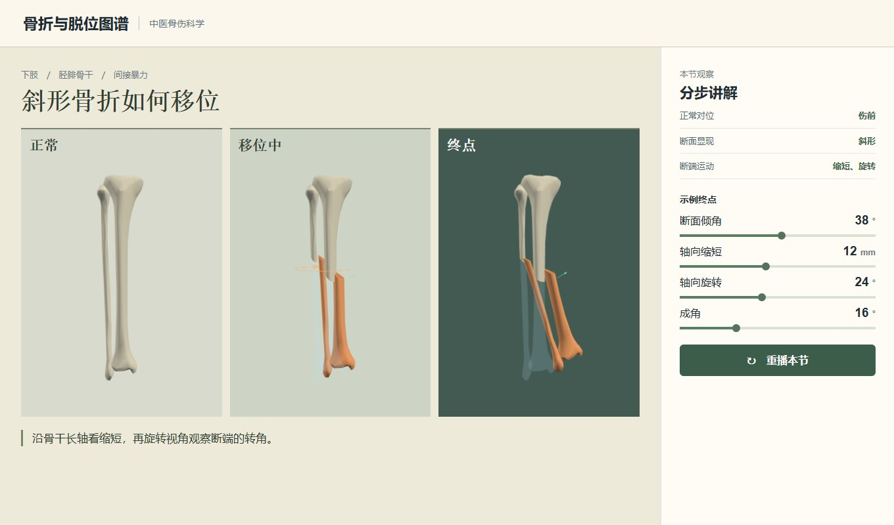

三张设计稿使用同一男性模型和同一组运动参数。点选图片可放大查看。
一个主视图，旁边并列数值与滑块。适合边调角度边问学生断端将朝哪里移动。

设计参考 · Carbon Slider · IBM Design Language
正常对位与受伤终点使用同一观察角度和比例，教师可以指着相同标志点比较两边的位置。

设计参考 · shadcn/ui Blocks · Awwwards 三维网站案例
同屏保留正常、移位中和终点三帧，右侧按讲课顺序组织观察任务。

设计参考 · Mantine Stepper · Mantine UI 案例库